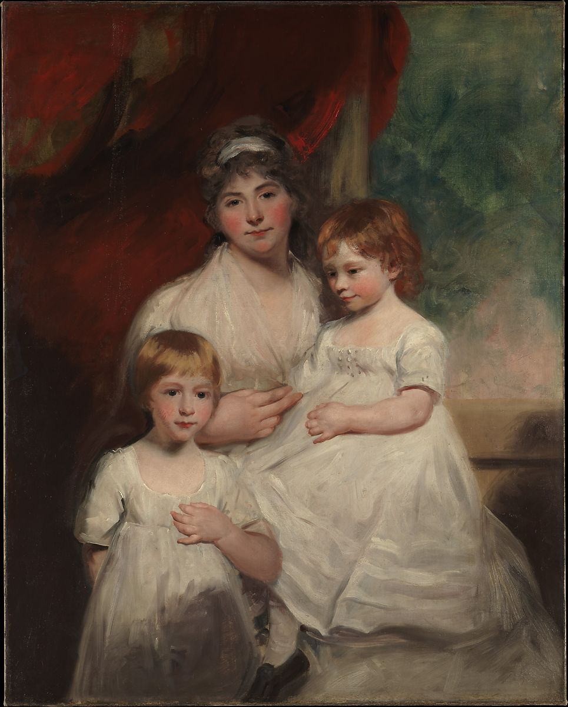

<head>
<meta charset="UTF-8" />
<meta name="keywords" content="drawing, painting" />
<meta name="description" content="drawings by Sunjy" />
<title>Sunjy</title>
<link rel="shortcut icon" type="image/x-icon" href="../../mImages/mCommon/favicon.ico" media="screen" />
<link rel="stylesheet" type="text/css" href="../../mCsses/mCommon/mCssA.css" />
<link rel="stylesheet" type="text/css" href="../../mCsses/mCommon/mCssB.css" />
<link rel="stylesheet" type="text/css" href="../../mCsses/mCommon/mCssC.css" />
<link rel="stylesheet" type="text/css" href="../../mCsses/mCommon/mCssD.css" />
<link rel="stylesheet" type="text/css" href="../../mCsses/mContent/mCssA.css" />
<link rel="stylesheet" type="text/css" href="../../mCsses/mContent/mCssB.css" />
<link rel="stylesheet" type="text/css" href="../../mCsses/mContent/mCssC.css" />
<link rel="stylesheet" type="text/css" href="../../mCsses/mContent/mCssD.css" />
</head>
<script type="text/javascript" src="../../mScripts/mContent/mContentAA.js" /></script>
<script type="text/javascript" src="../../mScripts/mContent/mContentAB.js" /></script>
<script type="text/javascript" src="../../mScripts/mContent/mContentAC.js" /></script>
<script type="text/javascript" src="../../mScripts/mContent/mContentAD.js" /></script>
<script type="text/javascript"></script> 
<script type="text/javascript">
document.write('<div class="mImgAbsolute"></div>');
/*
document.write('<p class="mFontSizeBColor" />From a white paper...</p>');
document.write('<table class="center"><tr><td>');
document.write('');
document.write('</td></tr></table>');
*/
</script>


<script type="text/javascript">
document.write('<p class="mFontSizeBColor" />Mrs. John Garden (Ann Garden) and Her Children, John and Ann Margaret</p>');
document.write('<p class="mFontSizeSColor" />By John Hoppner, 1796 or 1797. This portrait of a mother and two children shows the family of John Garden. Until 1808, when Garden senior bought the estate of Redisham Hall, Suffolk, the family lived in London. Garden&#39;s son, still a baby, has the fair skin of a redhead. He wears a white dress trimmed with three rows of four tiny, brass buttons on the bodice, and sits in his mother&#39;s lap.<br><br>The picture, which demonstrates Hoppner&#39;s sympathetic response to young children, is unfinished but was accepted by the family nevertheless.</p>');
document.write('<table class="center" /><tr><td>');
document.write('<br>The picture, which demonstrates Hoppner&#39;s sympathetic response to young children, is unfinished but was accepted by the family nevertheless." />');
document.write('</td></tr></table>');
</script>


